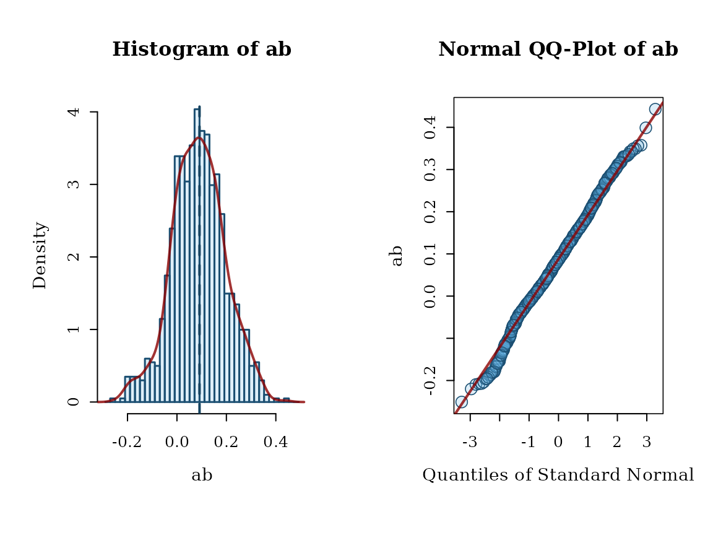
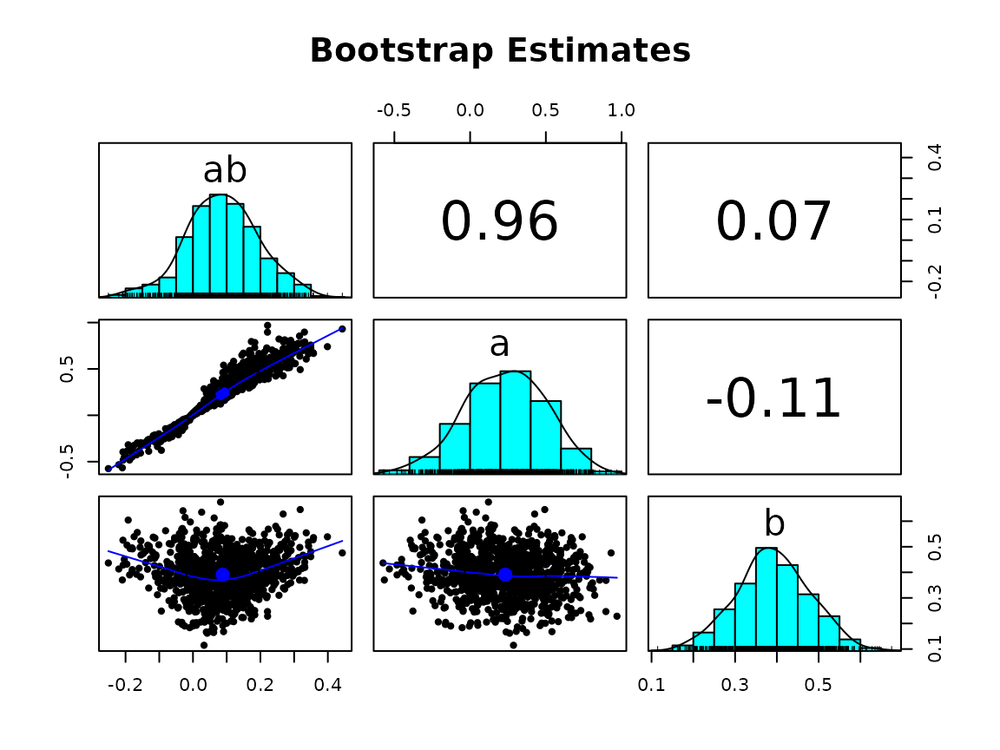
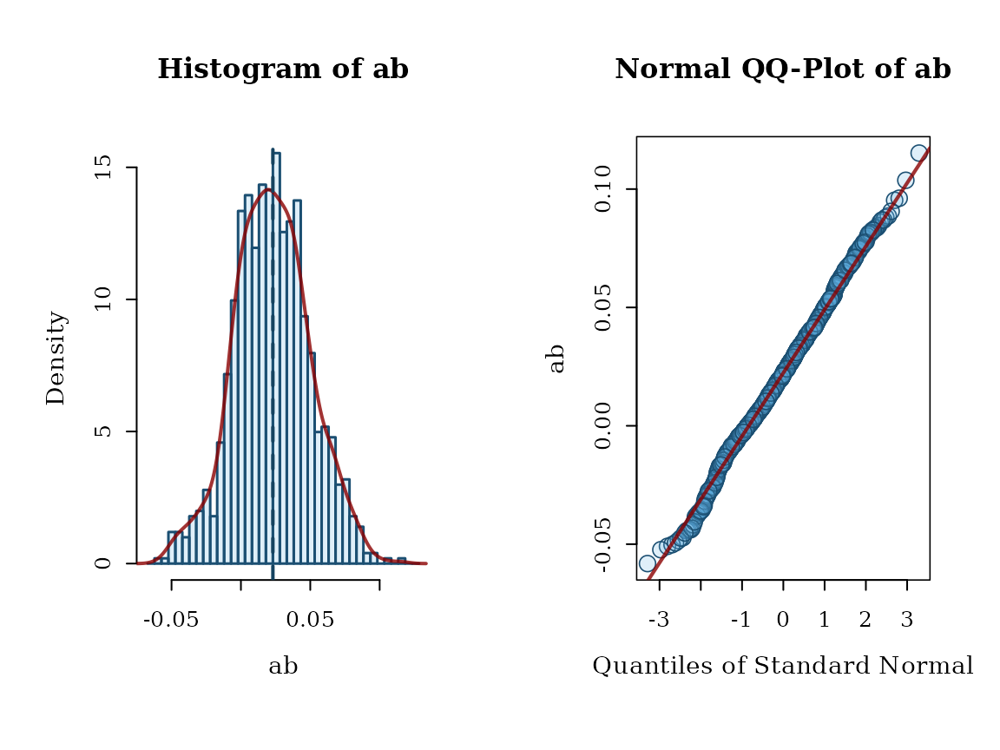
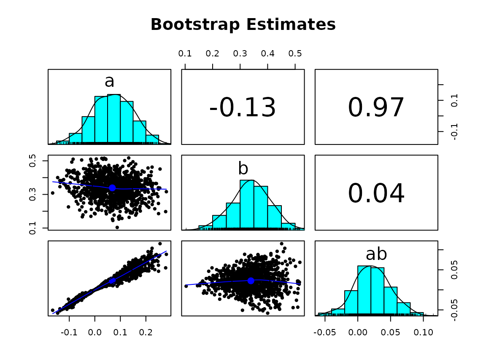

hist_qq_boot_and_scatter_boot
Source:vignettes/hist_qq_boot_and_scatter_boot.Rmd
hist_qq_boot_and_scatter_boot.Rmd
library(semboottools)
library(lavaan)
#> This is lavaan 0.6-19
#> lavaan is FREE software! Please report any bugs.Function Syntax
hist_qq_boot <- function(object,
param,
standardized = NULL,
nclass = NULL,
hist_color = "#5DADE233",
hist_linewidth = 1.5,
hist_border_color = "#1B4F72",
density_line_type = "solid",
density_line_color = "#8B0000CC",
density_line_linewidth = 2,
est_line_color = "#154360",
est_line_type = "dashed",
est_line_linewidth = 2,
qq_dot_pch = 21,
qq_dot_color = "#1B4F72",
qq_dot_fill = "#5DADE233",
qq_dot_size = 1.3,
qq_line_color = "#8B0000CC",
qq_line_linewidth = 2.1,
qq_line_linetype = "solid"
)
scatter_boot <- function(object,
params,
standardized = NULL,
main = "Bootstrap Estimates",
)Arguments
hist_qq_boot
| Argument | Description |
|---|---|
object |
The fitted lavaan model or the result from
standardizedSolution_boot() /
parameterEstimates_boot(). Bootstrap estimates must already
be stored in the object. |
param |
The name of the parameter you want to plot (as shown in
coef() output). |
standardized |
Set to TRUE if you want to plot standardized estimates,
FALSE for unstandardized. If using the output from
standardizedSolution_boot(), this is set
automatically. |
nclass |
Number of bars (bins) in the histogram. Optional. |
hist_color |
Color of the histogram bars. |
hist_linewidth |
Width of the histogram bar borders. |
density_line_type |
Style of the density curve line (e.g., "solid",
"dashed"). |
density_line_color |
Color of the density curve. |
density_line_linewidth |
Width of the density curve line. |
est_line_type |
Style of the vertical line showing the parameter’s point estimate
(e.g., "dotted"). |
est_line_color |
Color of the vertical line showing the point estimate. |
est_line_linewidth |
Width of the vertical line showing the point estimate. |
qq_dot_size |
Size of the dots in the QQ plot. |
qq_dot_color |
Color of the dots in the QQ plot. |
qq_dot_pch |
Shape of the dots in the QQ plot (numeric). |
qq_line_linewidth |
Width of the diagonal line in the QQ plot. |
qq_line_color |
Color of the diagonal line in the QQ plot. |
qq_line_linetype |
Style of the diagonal line in the QQ plot (e.g.,
"solid"). |
scatter_boot()
| Argument | Description |
|---|---|
object |
A fitted lavaan model, or the output from
standardizedSolution_boot() /
parameterEstimates_boot(). Make sure the bootstrap
estimates are stored before calling this function. |
params |
A character vector with two or more parameter names
to include in the scatterplot matrix. The names should match those in
coef() output. |
standardized |
Logical. Set to TRUE to plot standardized estimates, or
FALSE for unstandardized ones. If using
standardizedSolution_boot() output, this is handled
automatically. |
main |
Title of the scatterplot matrix. Default is
"Bootstrap Estimates". |
... |
Other optional arguments passed to [psych::pairs.panels()] to further customize the appearance of the scatterplot matrix (e.g., correlation method, grid lines, etc.). |
Example
library(lavaan)
# Simulate data
set.seed(1234)
n <- 200
x <- runif(n) - 0.5
m <- 0.4 * x + rnorm(n)
y <- 0.3 * m + rnorm(n)
dat <- data.frame(x, m, y)
# Specify model
model <- '
m ~ a * x
y ~ b * m + cp * x
ab := a * b
'
# Fit model
fit1 <- sem(model, data = dat, se = "boot", bootstrap = 1000)
#> Warning: lavaan->lav_model_nvcov_bootstrap():
#> 1 bootstrap runs failed or did not converge.
fit2 <- sem(model, data = dat, fixed.x = FALSE)Basic usage: default settings
fit1 <- store_boot(fit1)
hist_qq_boot(fit1, param = "ab", standardized = FALSE)
scatter_boot(fit1, c("ab", "a", "b"), standardized = FALSE)
fit2 <- store_boot(fit2)
hist_qq_boot(fit2, param = "ab", standardized = TRUE)
scatter_boot(fit2, c("a", "b", "ab"), standardized = TRUE)